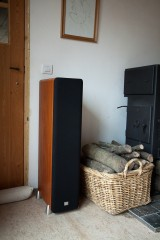
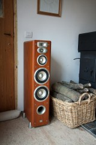
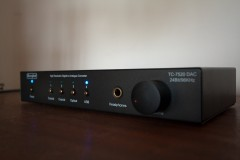
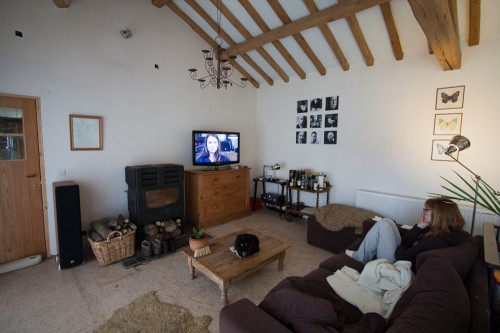
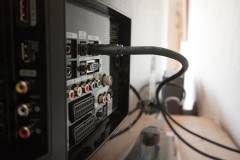
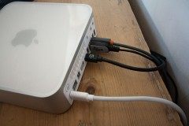
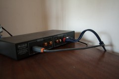
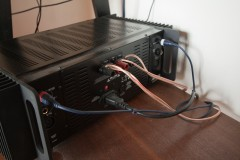

Hifi zoektocht, deel 2: gevonden!
zondag 7 februari 2010
Zoals ik schreef in het voorgaande deel over mijn zoektocht naar een nieuwe stereo-installatie, vormde de ontmoeting met Jean-Luc Daumerie een sleutelmoment in mijn beslissingsproces. Via een tweedehandsaanbieding van een Cambridge Audio DACMagic kwam ik met deze hifi-freak uit Kortijk in contact.
Hij is de beroerdste verkoper die ik ooit ontmoet heb: toen ik met het gevraagde geld in de hand bij hem aanklopte, nodigde hij me prompt uit in zijn luisterkamer (voorzien van o.a. een McInTosh MA6600). Twee uur later dacht geen haar op mijn hoofd er nog aan om zijn rondslingerende DACMagic te adopteren. Op de terugweg naar huis besefte ik pas hoe hij mijn zorgvuldig opgebouwde hifi-kennisframework van de voorbije maanden compleet met de grond had gelijk gemaakt.
Ik hou van zo’n mensen.
Brave consumenten
Wanneer je als brave consument de grote hifi-winkels afschuimt, word je onbewust steeds in dezelfde richtingen geleid. Men gaat ervan uit dat mensen voor hun woon- of luisterkamer een installatie verwachten die het beste van twee werelden combineert: een zorgvuldig afwegen van features én design.
Gewone stervelingen die willen investeren in degelijk geluid, leggen daar graag geld voor op tafel, maar zullen toch niet gauw over de 1500 à 2000 euro gaan (voor installatie en luidsprekers sámen welteverstaan). Dat budget is dan ook een druk bezochte vijver waar een handvol merken gretig in vissen. Je zal ze terugvinden in de meeste winkels: Cambridge Audio, NAD, Rotel, Marantz en vooral B&W wat luidsprekers betreft. Ook op internetfora worden de verschillende types en productlijnen van deze fabrikanten druk bediscussieerd.
Het probleem van deze voorgekauwde pakketten is niet dat ze minderwaardig zijn, maar dat er natuurlijk behoorlijk wat geld voor moet worden neergeteld. Je zal kunnen genieten van degelijk geluid, maar je had meer (en beter!) kunnen krijgen voor minder geld. Dat is nu net wat Jean-Luc mij heeft doen inzien. Je moet de platgetreden commerciële paden verlaten om koopjes te doen. Maar er zijn natuurlijk ook nadelen…
Lelijk eendje

Ik noteer meteen bij bovenstaande redenering dat deze niet voor iedereen opgaat. Wie zijn hifi-installatie een prominente plaats wil geven in zijn eclectisch samengestelde woonkamer, moet natuurlijk rekening houden met design. In dat geval stopt u hier beter met lezen, of gaat u op zoek naar een leuk kastje om het alternatief, device-chaos, aan het zicht te onttrekken.
Inderdaad, mijn kersverse hifi-installatie is pokkelelijk. Overal schreeuwerig blauwe led-lichtjes, passieve koelvleugels, verschillende afmetingen, en draden! Veel draden. In mijn vorig deeltje schreef ik bij mijn verwachtingen dat design van geen belang was, maar dit heb ik nooit zien aankomen.
Een tweede belangrijk nadeel is dat er, in tegenstelling tot samengestelde pakketten, vaak geen afstandsbediening bestaat voor eigenhandig samengestelde hifi-ketens. Gelukkig kan hier in meer of minder mate een mouw aan gepast worden via software zoals iPhone Remote etc.
De configuratie
Genoeg intro! Let’s get down to business. Hieronder zie je het volledige schema, inclusief prijzen, van de complete home-cinema & stereo hifi-setup.

Hoewel het buiten de scope van dit artikel valt, licht ik kort het home cinema gedeelte van de opstelling toe. De LCD-televisie is een Samsung LE40B650, nog steeds bij de besten van zijn klas in het 40″ segment. De Mac mini (standaard 2.2 Ghz basisconfiguratie d.d. eind 2009) vormt het hart van de complete set up: het stuurt al-dan-niet lossless muziek naar de versterkers en loepzuivere 1080p video naar de TV. Noteer dat de Mac géén bit geluid stuurt naar de TV (de kwaliteit van de geluidsweergave van moderne televisie is omgekeerd evenredig aan de kwaliteit van het beeld). Voor muziek gebruik ik natuurlijk iTunes; een spotgoedkope eyeTV DTT voor radio (Klara, Klara continuo, etc) en TV(-opnames) (Canvas, Canvas+, EEN, EEN+); en tenslotte het onvoorstelbare en gratis Plex Mediacenter voor series, films, dvd’s. Alles werkt zo vlot, dat ik er deze week bijna door ontroerd was.
Luidsprekers


De JBL L880 mét beschermhoesje.
Het leeuwendeel van de kost voor het hifi-gedeelte wordt in beslag genomen door de luidsprekers, twee JBL L880‘s. Ik heb ze voor het eerst gehoord in de luisterkamer van Jean-Luc (waar ze tussen vele andere waren opgesteld). Het verschil met de 600 series van B&W is frappant: het geluid is helderder, de bas warmer en voller. Ik was meteen verliefd. Het was simpelweg de beste luidspreker die ik tot dan gehoord had.
De normale prijs hier in België schommelt tussen €900 en €1000. Ik kon ze op de kop tikken bij Bestekeus.nl voor de zeer lage prijs van €762. Daarvoor moest ik wel tot in Meer (Antwerpen) rijden, maar dat had ik er graag voor over. Als je bedenkt dat je voor €1200 amper een stel —och here— B&W CM5 bookshelves speakers mee naar huis neemt, dan wéét je dat je goed gekocht hebt. De B&W’s kunnen er vier keer in!
Ik kan met geen woorden beschrijven hoe goed ik deze luidsprekers vind. Anderen zijn daar beter in: lees bijvoorbeeld de reviews bij Stereophile of op Amazon.com. Kort gezegd komt het hier op neer: JBL heeft met deze luidspreker een high end product op de markt gezet voor een low end prijs. “Congratulations to the JBL design team for having brought a speaker of this quality to the masses.”


JBL L880 zonder beschermhoesje.
Een van de eerste zaken die opvalt wanneer je ze uitpakt, is hoe groot en diep deze speakers zijn. Ik ben een potige kerel, maar had toch moeite om ze op mijn eentje uit hun doos te krijgen. Zonder het zwarte gaasje zien ze er vrij agressief uit met hun driedubbele tweeters (zeldzaam in dit prijssegment!). Mét het gaasje zien ze er opeens very classy en deftig uit, net als het donkere kersenfineerhout (niet zoals op bovenstaande foto). De goedkope plastic voetjes zijn een regelrechte schande. Gelukkig kan je ze probleemloos afschroeven en vervangen door rubberen ‘tsjoepkes’.
Wat doet een mens wanneer hij nieuwe luidsprekers heeft gekocht? De boel eens open zetten natuurlijk. Dat gaf weinig problemen. Ik heb wel de indeling van onze servieskast moeten herbekijken. Zelfs de 20cm dikke mousse van onze sofa leek niet bestand tegen de trillingen. Maar al bij al leer je niet zoveel uit al die decibels. Wat me nu, na een kleine maand gebruik, meer pleziert, is hoe vol het geluid kan zijn wanneer het volume niet erg hoog staat. Ik geniet er elke dag van en sta af en toe gewoon versteld.
Een aanrader van formaat. Letterlijk en figuurlijk. (n.b.: naar ‘t schijnt zijn de grote broers van deze luidsprekers, de JBL L890‘s, nóg een stuk groter: dat moeten echte monsters zijn.)
Versterker & DAC
Over de wondere wereld der geluidsversterking heb ik misschien nog het meeste geleerd van Jean-Luc. Wat doet de klassieke analoge geïntegreerde stereoversterker, de usual suspect die winkeliers standaard aanbieden aan de hifi-koper? Het zijn bak(jes) die lage stroomstootjes van verschillende kanalen (CD, aux, tuner,…) leiden (1) en controleerbaar (2) versterken (3) naar grote stroomstoten (in het beste geval zonder vervorming) en tenslotte doorsturen naar de luidsprekers. Kanaalselectie (functie #1), voorversterking (functie #2) en versterking (functie #3): drie functies in één apparaat.
Sommige versterkers krijgen het label digitaal, wat niet meer wil zeggen dan dat er aan een analoge versterker een DAC (functie #4) is toegevoegd. Dat zijn een aantal electronicachips die digitale signalen (van USB, coax of optische kabel) omzetten naar kleine stroomstootjes, die dan verder op de normale manier door de versterker worden behandeld. Er zijn goede DAC’s en (zeer) slechte DAC’s, zoals deze in de computer waar u nu voor zit bijvoorbeeld.
Als bewuste hifi-koper moet je afwegen in welke van deze vier basisfuncties je meer of minder wil investeren.


Beresford TC-7520 DAC: drie in één!
Aangezien de enige geluidsbron in mijn opstelling de Mac mini is, heb ik quasi geen behoefte aan kanaalselectie (functie #1), wél aan voorversterking (functie #2), versterking (functie #3) en DAC (functie #4). Het zou te gek zijn om een prijzige kant-en-klaar versterker te kopen, zoals de sexy Cambridge Audio Azur 840A van €1000, om de helft van het toestel (functie #1) nooit te gebruiken en waar op de koop toe nog geen DAC in zit?
Jean-Luc maakte me attent op de kleine Beresford TC-7520 DAC. In zijn luisterkamer kon ik het kleinood onmiddellijk vergelijken met het prijsbeest van Cambridge Audio, de DACMagic. Hoewel de verschillen in klankkleur en -diepte subtiel en subjectief zijn, heeft de Beresford één groot voordeel ten opzichte van de DACMagic: hij heeft een volumeknop! Dat wil zeggen dat het apparaatje niet alleen de rol van DAC en (beperkte) kanaalselectie op zich kan nemen, maar ook die van voorversterker. Je kan hem met andere woorden direct aansluiten op een ‘domme’ eindversterker. Ik heb de Beresford besteld via internet voor €239. Nog geen drie dagen later zat het in de bus. Jean-Luc heeft trouwens zelf een korte review geschreven van de Beresford.
De eindversterker (‘poweramp‘) moest krachtig genoeg zijn om de nogal gulzige JBL’s (2 keer 150W is niet niets) vlot aan te sturen. Een kleine internetspeurtocht bracht ons bij de Alesis RA500, die voor amper €250 te krijgen was bij bekafun.com. Het bijzondere aan de Alesis is dat het een zware ‘discotheekversterker’ is met passieve koeling (vleugeltjes aan de zijkant die heet worden). In soortgelijke fuifbeesten (en eigenlijk in alle zwaardere modellen) zit meestal een lawaaierige ventilator, wat natuurlijk een no-go is voor de woonkamer. De voordelen van deze pro-versterker? Power, power, power! Lees: geen vervorming van de muziek wanneer het ietsje luider mag.
En daarmee was de kous af. De Beresford en de Alesis samen vormen een geweldig team (2 x 150W RMS aan 8 ohm) voor nog geen €450! De klank is bovendien zeer neutraal omdat er zo weinig ‘loopwerk’ aan te pas komt.
Ik ben een tevreden man.


Julie genietend van verse home cinema. Die rommel in de hoek? Right. De tweede luidspreker staat onmiddellijk achter de sofa (niet zichtbaar).
Room for improvement
Wie toch meer wil aansluiten dan enkel zijn media center (een platenspeler bijvoorbeeld), heeft niet genoeg met mijn installatie. In dat geval zou je kunnen investeren in een aparte, gespecialiseerde voorversterker. De Beresford DAC (of een DACMagic) sluit je dan aan op één ingang van de voorversterker; de platenspeler en de tuner op de andere.
Op basis van reviews op het net, alsook volgens Jean-Luc zelf, is de Rotel RC-1580 Classic Stereo Preamplifier een van de betere pre amps die je kan krijgen. Met €1000 euro kan je echter spreken van een stevige aderlating. Maar misschien vormt de bijhorende afstandsbediening wel een troost. Die mis ik echt wel bij de Beresford.
Enkele fotootjes


Eén HDMI-kabel (zonder geluidstransfer) is het enige wat toekomt in de TV.


Mac mini met: Displayport to HDMI kabel, USB-kabel voor audio, USB-kabel voor externe HD's (hub).


Aansluitingen op de Beresford: USB-kabel van de Mac, analoge audio-out naar de eindversterker.


Aansluitingen op de eindversterker: analoge stereo-kabel van de Beresford DAC, standaard audiokabels naar de luidsprekers.
Jean-Luc op 8 februari 2010
Go PRO als je goede klank wilt.
Design en goede klank gaan niet altijd samen (behalve bij http://www.mcintoshlabs.com natuurlijk). Maar als je de full body klank in huis wilt halen, dan heb je een pro versterker nodig. En échte boxen: JBL, Clipsch…
Laatste nieuwe project: Crown XLS202 zonder ventilator: SUPER! Met dank aan MS uit K.